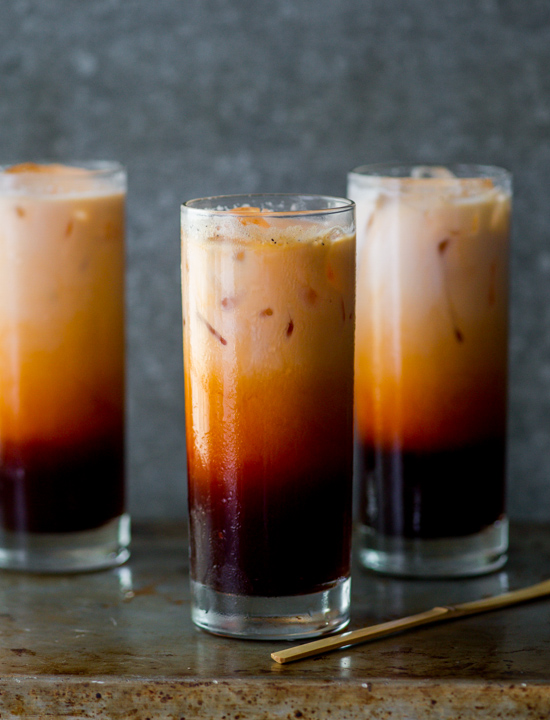

Thai Tea

Description
Thai tea is incredibly popular and easy to make at home.
Many store-bought tea mixes are dyed with yellow food colouring to help give the drink its distinct orange colour.
Ingredients
- 1 cup Thai tea mix
- 4 cups water
- 3/4 cup of granulated sugar
- 3/4 cup of half and half (can be substituted with coconut milk, whole milk, or sweetened condensed milk)
- Ice
Steps